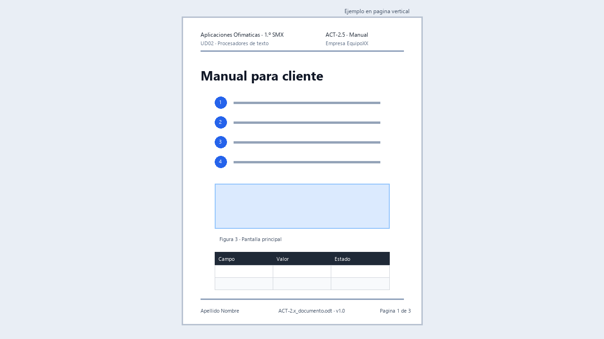

ACT-2.5 · Manual para un cliente

Ejemplo visual orientativo: no hay que copiarlo exactamente, pero muestra un manual con índice, pasos, capturas, leyendas y tablas.
Tarea en Aules: ACT-2.5 · Manual para un cliente
Archivo: ACT-2.5_apellido_nombre_manual.zip · Individual · 4 h.
Encargo
Práctica final de la unidad. A partir de las notas en bruto y los requisitos incluidos en esta actividad, y de las capturas que realizarás durante la prueba, debes crear un manual completo para un cliente no técnico.
El manual debe explicar un procedimiento de forma clara, ordenada y verificable. No basta con acumular capturas.
Material de partida: Papelería La Plaça
Situación del cliente
La empresa ficticia Papelería La Plaça utiliza LibreOffice Writer para preparar avisos. Una persona recién incorporada sabe escribir y abrir aplicaciones, pero necesita aprender a guardar un aviso editable y generar una copia en PDF para enviarla a un cliente.
Elabora un manual que le permita realizar el procedimiento sin ayuda. Título orientativo: Cómo guardar un aviso de Writer y preparar su versión PDF.
Notas en bruto del servicio técnico
Estas notas están desordenadas, contienen repeticiones y tareas pendientes. Debes seleccionarlas, ordenarlas y convertirlas en instrucciones claras. Las marcas [TODO] indican explicaciones que debes desarrollar y comprobar, no información que tengas que inventar.
- Al terminar, abrir el PDF para comprobarlo. No basta con que aparezca el archivo.
- El cliente trabaja con LibreOffice Writer.
- [TODO] Explicar la diferencia entre el editable y el PDF con palabras sencillas.
- Crear una carpeta llamada
Avisos_clientesdentro de Documentos.- No utilizar nombres como «documento nuevo», «finalfinal» o «prueba3».
- El aviso se llamará
Aviso_horario.- Guardar primero el documento editable en formato ODT.
- El PDF debe ir en la misma carpeta.
- Si se modifica el aviso después, guardar otra vez el editable y volver a generar el PDF.
- Ojo: guardar el ODT no actualiza automáticamente un PDF que ya exista.
- [TODO] Añadir una captura donde se vea cómo elegir la carpeta y el nombre.
- Comprobar que no se corta el texto ni aparecen páginas vacías.
- Writer y un visor de PDF ya están disponibles en el equipo; no hace falta instalar nada.
- No incluir cuentas, nombres reales ni otras ventanas en las capturas.
- Si no encuentra el archivo, revisar dónde lo ha guardado.
- Guardar primero el editable. Esto está repetido, pero es importante.
- Para cambiar el contenido en el futuro, abrir el ODT.
- El PDF es la copia que se entregará al cliente.
- [TODO] Explicar qué hacer si ya existe un archivo con el mismo nombre.
- Antes de sustituir un archivo, comprobar que es la versión que se quiere actualizar.
- El manual debe indicar qué debería ver el usuario después de cada acción importante.
- Al finalizar deben existir dos archivos:
Aviso_horario.odtyAviso_horario.pdf.
Contenido para realizar la prueba
Crea en Writer el siguiente aviso ficticio. Será el documento utilizado para probar el procedimiento y obtener las capturas; debe ocupar una sola página.
PAPELERÍA LA PLAÇA
Aviso de horario
Durante la próxima semana, el horario de atención será de lunes a viernes, de 9:00 a 14:00.
Para realizar una consulta, escribe a: informacion@papeleria.example
Gracias por tu comprensión.
Todos los datos son ficticios. El aviso de prueba y el manual son documentos distintos: el aviso sirve para demostrar el procedimiento; el manual explica cómo realizarlo.
Requisitos concretos de este caso
Además de la estructura y condiciones indicadas en esta actividad:
- Utiliza la plantilla de empresa de ACT-2.1 e identifica su nombre y versión.
- Completa la portada con título, cliente ficticio, autor, fecha y versión.
- Incluye una tabla de control de versiones con versión, fecha y descripción del cambio.
- Redacta pasos numerados con una acción y su resultado esperado.
- Incluye al menos dos referencias cruzadas automáticas: una a una figura y otra a un apartado.
- Añade una tabla con al menos cuatro problemas frecuentes, qué comprobar y cómo resolverlos.
- Incluye un glosario con al menos cuatro términos necesarios para comprender el procedimiento.
- Utiliza leyendas automáticas y texto alternativo en las capturas.
- No hay un mínimo de páginas: ajusta la extensión al contenido útil.
Capturas que debes obtener
Realiza tus propias capturas en el equipo de prácticas siguiendo esta relación. No tienes que esperar a recibir imágenes del profesorado. Recorta cada captura para mostrar lo necesario y comprueba que no contiene datos personales.
| Captura | Qué debe permitir comprobar |
|---|---|
| Preparación | La carpeta Avisos_clientes creada dentro de Documentos. |
| Guardado del editable | Carpeta de destino, nombre del archivo y formato ODT. |
| Exportación | La opción utilizada para generar el PDF. |
| Archivos obtenidos | La presencia de Aviso_horario.odt y Aviso_horario.pdf en la carpeta de trabajo. |
| Revisión final | El PDF abierto, completo y legible, con el aviso en una sola página. |
Las capturas acompañan a las instrucciones; no sustituyen la explicación escrita. Usa los nombres de opciones que hayas comprobado en la versión instalada de Writer.
Prueba obligatoria del procedimiento
Sigue tu propio manual desde el principio y comprueba que permite:
- Crear la carpeta de trabajo.
- Guardar el aviso como ODT.
- Generar el PDF.
- Localizar y abrir ambos archivos.
- Modificar el ODT, guardar los cambios y generar de nuevo el PDF. Puedes añadir temporalmente «Versión de prueba» al aviso y comprobar que aparece en el nuevo PDF. Retira ese texto, guarda y exporta otra vez antes de terminar.
- Reconocer qué archivo se debe editar y cuál se debe enviar.
Registra las dificultades y corrige el manual. En la lista de comprobación indica el requisito, la página o apartado, la prueba realizada y su resultado o corrección. No inventes correcciones: documenta las que realmente hayas realizado.
Estructura mínima
El manual debe incluir:
- Portada.
- Control de versiones.
- Índice automático.
- Introducción para usuario no técnico.
- Requisitos previos.
- Procedimiento paso a paso.
- Capturas con pie.
- Tabla de problemas frecuentes.
- Glosario breve.
- Cierre o comprobación final.
Condiciones
- Debe crearse desde la plantilla de la empresa.
- Debe usar estilos reales.
- Debe incluir referencias cruzadas.
- Debe tener imágenes controladas.
- Debe exportarse a PDF.
- Debe revisarse como si fuera para un cliente real.
Lista de comprobación
Antes de entregar:
- Actualiza índice y campos.
- Comprueba numeración de páginas.
- Abre el PDF y revisa todas las páginas.
- Comprueba que ninguna captura muestra datos personales.
- Revisa ortografía.
- Comprueba que el nombre de archivo sigue la norma.
- Verifica que el editable se abre correctamente.
Entrega
Un ZIP individual con:
- Manual editable.
- Manual en PDF.
- Lista de comprobación completada.
- Nota breve indicando dos decisiones de diseño y dos correcciones realizadas tras revisar.
Evaluación
CA: RA2.b, RA2.c, RA2.d y RA2.f.
Se valorará que el manual sea útil para una persona real: orden, claridad, capturas necesarias, estructura automática, PDF correcto y ausencia de datos sensibles.
Cómo abordar el manual sin empezar de una página vacía
Esta práctica final se realiza individualmente en clase y sin IA, como evidencia de tu aprendizaje. Puedes consultar la teoría, tus actividades anteriores y la guía documental. El caso de Papelería La Plaça, las notas y los requisitos están incluidos en esta actividad; las capturas las realizarás tú en el equipo de prácticas. La guía siguiente explica el método para transformar ese material en un manual.
Fase 1. Entender al usuario y ordenar las notas
Antes de maquetar responde: ¿qué quiere conseguir el cliente?, ¿qué sabe ya?, ¿qué necesita antes de empezar?, ¿cómo sabrá que lo ha conseguido? Clasifica las notas como requisitos, pasos, comprobaciones y problemas. Si falta una información imprescindible, pregúntala al docente; no inventes menús ni resultados.
Esqueleto para preparar con estilos:
Portada: tarea, cliente ficticio, autor, fecha y versión
Control de versiones
Índice automático
1. Objetivo
2. Requisitos previos
3. Procedimiento
3.1. Preparación
3.2. Ejecución
3.3. Comprobación
4. Problemas frecuentes
5. Glosario
6. Comprobación final y ayuda
Fase 2. Convertir una nota en una instrucción útil
Nota de ensayo: «Exportar y mirar PDF». Instrucción explicada: «Abre la opción de exportar a PDF y guarda una copia con el nombre acordado. Después abre el archivo guardado en un visor. Comprueba que están todas las páginas y que el índice lleva al apartado correcto». Fíjate en las tres partes: acción, resultado esperado y comprobación.
Escribe cada procedimiento como una lista numerada. Coloca la captura junto al paso que explica, con una leyenda concreta. Evita instrucciones como «hazlo igual que en la imagen»: el usuario necesita saber qué opción elegir y por qué.
Fase 3. Construir los elementos del documento
- Crea el manual desde la plantilla. Completa marcadores de portada y versión.
- Pega notas sin formato y conviértelas en explicaciones propias para el cliente.
- Aplica títulos reales y numeración de capítulos.
- Inserta tablas útiles: requisitos y problemas frecuentes, por ejemplo.
- Inserta capturas con proporción, anclaje, leyenda automática y texto alternativo.
- Inserta referencias cruzadas a apartados o figuras; no escribas sus números a mano.
- Genera el índice y, si figura entre los requisitos facilitados, la tabla de figuras.
- Añade notas al pie para fuentes o aclaraciones, y un glosario que explique términos necesarios.
Tabla de problemas de ensayo:
| Problema que observa el usuario | Qué comprobar | Acción siguiente |
|---|---|---|
| No encuentra el PDF | Carpeta y nombre elegidos al exportar | Volver a la carpeta de destino |
| Falta un apartado en el índice | Estilo y nivel de su título | Corregir el estilo y actualizar |
| Una captura no se lee | Recorte y tamaño | Sustituirla por una captura legible |
Fase 4. Probar como cliente
Lee el procedimiento sin apoyarte en lo que recuerdas de clase. ¿Indica desde dónde empieza? ¿Explica qué debe verse al terminar? Haz una prueba real de los pasos, revisa campos y exporta. Abre el PDF y comprueba todas las páginas.
Completa tu lista de comprobación con evidencias:
| Requisito | Dónde se observa | Prueba realizada | Resultado/corrección |
|---|---|---|---|
| Índice automático | [Página] | Actualizar tras añadir un título | [Resultado] |
| Capturas estables | [Apartado] | Insertar texto antes | [Resultado] |
| Referencias | [Frase o página] | Cambiar orden y actualizar | [Resultado] |
| [Archivo] | Abrir y recorrer páginas | [Resultado] |
No dejes cambios temporales de prueba en la versión final. La nota de entrega debe recoger dos decisiones concretas y dos correcciones reales, por ejemplo «cambié una captura porque el botón no se leía», solo si ocurrió en tu revisión.
Resultado esperado: un cliente puede realizar la tarea y reconocer el resultado; el editable conserva la estructura automática y el PDF coincide con la versión final.